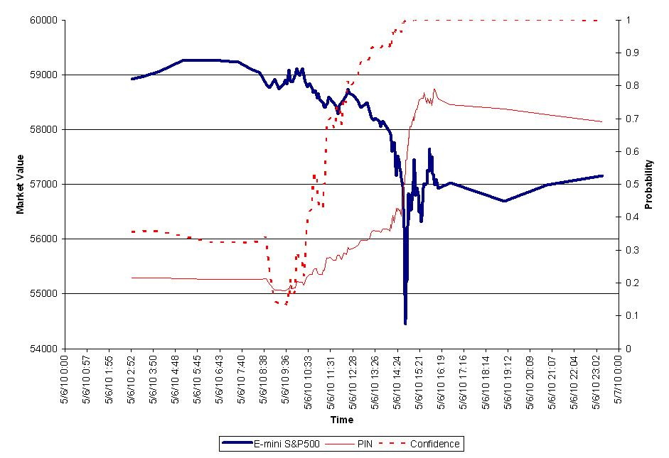

A. Le « trading » algorithmique
Le trading algorithmique se compose d’algorithmes étant accompagnées par des analyses graphique pour identifier les nombreuses variations de cours, les niveaux de volatilités ou bien émettre un arbitrage de prix.
En effet, selon ces variations qui servent de conditions, répondant à des critères dans les algorithmes, le choix sera programmé dans le but de faire d’en profiter le plus possible.
On se rend compte que le trading géré par des algorithmes est plus rentable que si il est géré par un humain.
Le trading algorithmique se fait grâce aux robots de trading.
Les Robots de trading ou « Expert Advisor » sont des outils permettant d’automatiser des ordres précis grâce à des algorithmes fonctionnant en binaire.
A l’aide d’algorithmes mathématiques, le robot peut faire des analyses du marché boursier en traitant et en synthétisant les différents signaux émis par le marché.
D’une part, le robot de trading est beaucoup plus performant car il est conçu pour être opérationnel à tout moment (c’est-à-dire 24h/24 et donc 7j/7). Ce qui veut dire qu’ils peuvent effectuer des analyses en continu. Pour imager un peu la chose, sachez que ces robots sont capables de traiter plus de 7 000 ordres en l’espace de quelques millisecondes.
De par leur efficacité, ces robots permettent aux entreprises à capital ouvert de faire monter leurs capitaux, due à l’augmentation de la capacité de trading entre les humains et les robots.
Aujourd’hui, le trading algorithmique représente 50% des ordres concernant la bourse en France ainsi que 70% aux Etats Unis. On peut expliquer ces pourcentage grâce à ces Avantages, qui sont les suivants :
- Le marché est plus fluide car automatisé
- Engendre une baisse de coût de trading pour les traders
- Les prix sont variables en fonction du contexte, c’est-à-dire qu’elle s’adapte
B. Une fiabilité déséquilibrée
Cependant, le sujet des robots de trading fait débat, car certains y voient un potentiel problème pour l’avenir concernant ces algorithmes :
- Fait augmenter la volatilité des places financière
- Déforme l’économie de marché par rapport à l’économie réelle
- Due aux potentiels bugs sur ces algorithmes, cela peut avoir de TRÈS lourdes conséquences sur l’économie.
Un des exemples notables est ce qu’on peut appeler « Flash Crash » ou « Krash Eclair » une crise économique en 2010 qui n’a pas duré si longtemps que ça, mais cela a été suffisant pour causer de nombreuses conséquences sur plusieurs années.
Cette crise a débuté en juin 2010 à 14h32, lors d’une grande volatilité, un ordre à été envoyé sur le marché par un robot de trading. Il est question de 4,1 milliards de dollars afin d’obtenir une position stable, c’est-à-dire que l’objectif de l’algorithme est d’obtenir un certains taux en se basant sur le % du volume d'échange calculé à la minute précédente, sans prendre en considération les prix et l'heure d'exécution.
Cela à causé une très grosse perte qui a conduit à une crise, alors que cela n’a duré « que » 38 minutes.
On peut voir cette baisse dans le graphique ci-dessous :

On y voit ici un pic allant vers le bas dû au “Flash Crash”
Ainsi, on peut remarquer les conséquences et l’importance de telles machines que sont les robots trading. On peut se lancer dans le trading algorithmique avec des robots grâce à des logiciels le permettant. Un de ces logiciels se nomme “ProRealTime” qui permet de programmer son propre système de trading automatique.
On peut programmer son robot à l’aide de différents algorithmes permettant alors de mettre au point des fonctions et procédures que l’on va réutiliser par la suite :
Quelques exemples d’algorithmes suivant :
Algorithme d’achat de n action d’une société sous certaines conditions :
Début
Si la société valide les conditions établies
↳ Achat de n actions de la société (n à déterminer)
Fin
Algorithme de vente de n action d’une société sous certaines conditions :
Début
Si la société valide les conditions établies
↳ Vente de n'actions de la société (n à déterminer)
Fin
En combinant ces algorithmes, on obtient un algorithme plus efficace :
Début
Si telle société a un cours de moins de 50%
↳ Achat de 100 actions de cette société
Sinon si on possède déjà des actions à cette société
↳ Vente de toutes nos actions de cette société
Fin
Évidemment, il existe des algorithmes beaucoup plus complexes. On peut quand même s’imaginer comment les algorithmes sont utilisés sur les robots de trading. Cependant, il faut être vigilant avec le trading algorithmique car au moindre problème, les risques de pertes ne sont que trop importants.
C. Le Big Data
Pour ce qui est de l’économie en elle-même, les algorithmes, avec le temps, ont permis de créer le concept d’intelligence artificielle (comme dit précédemment), cela permet par exemple, de favoriser l’utilisation de données massives, comme utilisé pour le Big Data. De plus, pour ce qui est du traitement de ces données, on se rend compte que les algorithmes peuvent représenter énormément de pouvoir, dû à leur rentabilité. Cela amène donc à des rachat de société en lien avec l'algorithme par d'autres sociétés.
Un des exemple notable concerne la GAFAGoogle, Amazon, Facebook et Apple, qui rassemble les sociétés Google, Apple, Facebook et Amazon qui ont effectué des rachats de société où l’entreprise est basée sur l'algorithme. Les GAFA ont compris que l'algorithme pouvait les aider à traiter leurs énormes quantités de données. En effet, on peut, grâce à cela, analyser le comportement des consommateurs, le potentiel risque financier et la reconnaissance du langage ou bien du visage. Avec du recul, on voit que plus le temps passe, plus les statistiques deviennent obsolètes et sont alors remplacées par des algorithmes.